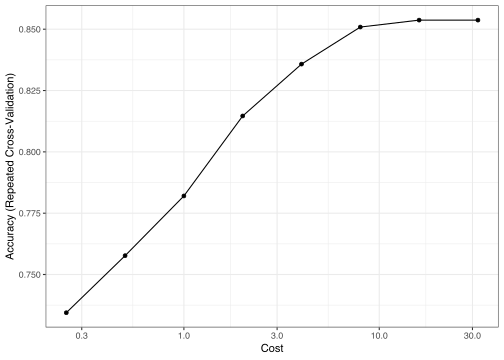
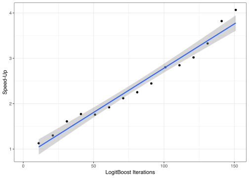
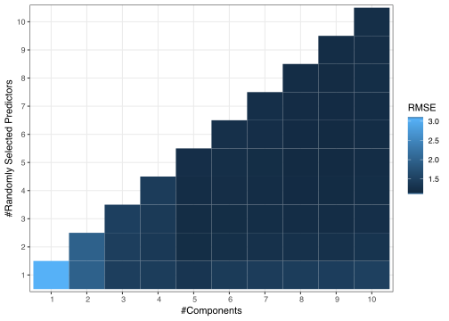
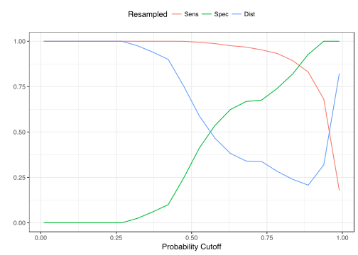

13 Using Your Own Model in train
Contents
- Introduction
- Illustrative Example 1: SVMs with Laplacian Kernels
- Model Components
- Illustrative Example 2: Something More Complicated
LogitBoost - Illustrative Example 3: Nonstandard Formulas
- Illustrative Example 4: PLS Feature Extraction Pre-Processing
- Illustrative Example 5: Optimizing probability thresholds for class imbalances
- Illustrative Example 6: Offsets in Generalized Linear Models
13.1 Introduction
The package contains a large number of predictive model interfaces. However, you may want to create your own because:
- you are testing out a novel model or the package doesn’t have a model that you are interested in
- you would like to run an existing model in the package your own way
- there are pre-processing or sampling steps not contained in the package or you just don’t like the way the package does things
You can still get the benefits of the caret infrastructure by creating your own model.
Currently, when you specify the type of model that you are interested in (e.g. type = "lda"), the train function runs another function called getModelInfo to retrieve the specifics of that model from the existing catalog. For example:
ldaModelInfo <- getModelInfo(model = "lda", regex = FALSE)[[1]]
## Model components
names(ldaModelInfo)## [1] "label" "library" "loop" "type" "parameters"
## [6] "grid" "fit" "predict" "prob" "predictors"
## [11] "tags" "levels" "sort"To use your own model, you can pass a list of these components to type. This page will describe those components in detail.
13.2 Illustrative Example 1: SVMs with Laplacian Kernels
The package currently contains support vector machine (SVM) models using linear, polynomial and radial basis function kernels. The kernlab package has other functions, including the Laplacian kernel. We will illustrate the model components for this model, which has two parameters: the standard cost parameter for SVMs and one kernel parameter (sigma)
13.3 Model Components
You can pass a list of information to the method argument in train. For models that are built-in to the package, you can just pass the method name as before.
There are some basic components of the list for custom models. A brief description is below for each then, after setting up and example, each will be described in detail. The list should have the following elements:
libraryis a character vector of package names that will be needed to fit the model or calculate predictions.NULLcan also be used.typeis a simple character vector with values"Classification","Regression"or both.parametersis a data frame with three simple attributes for each tuning parameter (if any): the argument name (e.g.mtry), the type of data in the parameter grid and textual labels for the parameter.gridis a function that is used to create the tuning grid (unless the user gives the exact values of the parameters viatuneGrid)fitis a function that fits the modelpredictis the function that creates predictionsprobis a function that can be used to create class probabilities (if applicable)sortis a function that sorts the parameter from most complex to leastloopis an optional function for advanced users for models that can create multiple submodel predictions from the same object.levelsis an optional function, primarily for classification models usingS4methods to return the factor levels of the outcome.tagsis an optional character vector that has subjects associated with the model, such asTree-Based ModelorEmbedded Feature Selection. This string is used by the package to create additional documentation pages on the package website.labelis an optional character string that names the model (e.g. “Linear Discriminant Analysis”).predictorsis an optional function that returns a character vector that contains the names of the predictors that we used in the prediction equation.varImpis an optional function that calculates variable importance metrics for the model (if any).oobis another optional function that calculates out-of-bag performance estimates from the model object. Most models do not have this capability but some (e.g. random forests, bagged models) do.notesis an optional character vector that can be used to document non-obvious aspects of the model. For example, there are two Bayesian lasso models (blassoandblassoAveraged) and this field is used to describe the differences between the two models.checkis an optional function that can be used to check the system/install to make sure that any atypical software requirements are available to the user. The input ispkg, which is the same character string given by thelibrary. This function is run after the checking function to see if the packages specified inlibraryare installed. As an example, the modelpythonKnnReguses certain python libraries and the user should have python and these libraries installed. The model file demonstrates how to check for python libraries prior to running the R model.
In the caret package, the subdirectory models has all the code for each model that train interfaces with and these can be used as prototypes for your model.
Let’s create a new model for a classification support vector machin using the Laplacian kernel function. We will use the kernlab package’s ksvm function. The kernel has two parameters: the standard cost parameter for SVMs and one kernel parameter (sigma).
To start, we’ll create a new list:
lpSVM <- list(type = "Classification",
library = "kernlab",
loop = NULL) This model can also be used for regression but we will constrain things here for simplicity. For other SVM models, the type value would be c("Classification", "Regression").
The library value checks to see if this package is installed and loads it whenever it is needed (e.g. before modeling or prediction). Note: caret will check to see if these packages are installed but will not explicitly load them. As such, functions that are used from the package should be referenced by namespace. This is discussed more below when describing the fit function.
13.3.1 The parameters Element
We have to create some basic information for the parameters in the form of a data frame. The first column is the name of the parameter. The convention is to use the argument name in the model function (e.g. the ksvm function here). Those values are C and sigma. Each is a number and we can give them labels of "Cost" and "Sigma", respectively. The parameters element would then be:
prm <- data.frame(parameter = c("C", "sigma"),
class = rep("numeric", 2),
label = c("Cost", "Sigma"))Now we assign it to the model list:
lpSVM$parameters <- prmValues of type can indicate numeric, character or logical data types.
13.3.2 The grid Element
This should be a function that takes parameters: x and y (for the predictors and outcome data), len (the number of values per tuning parameter) as well as search. len is the value of tuneLength that is potentially passed in through train. search can be either "grid" or "random". This can be used to setup a grid for searching or random values for random search.
The output should be a data frame of tuning parameter combinations with a column for each parameter. The column names should be the parameter name (e.g. the values of prm$parameter). In our case, let’s vary the cost parameter on the log 2 scale. For the sigma parameter, we can use the kernlab function sigest to pre-estimate the value. Following ksvm we take the average of the low and high estimates. Here is a function we could use:
svmGrid <- function(x, y, len = NULL, search = "grid") {
library(kernlab)
## This produces low, middle and high values for sigma
## (i.e. a vector with 3 elements).
sigmas <- kernlab::sigest(as.matrix(x), na.action = na.omit, scaled = TRUE)
## To use grid search:
if(search == "grid") {
out <- expand.grid(sigma = mean(as.vector(sigmas[-2])),
C = 2 ^((1:len) - 3))
} else {
## For random search, define ranges for the parameters then
## generate random values for them
rng <- extendrange(log(sigmas), f = .75)
out <- data.frame(sigma = exp(runif(len, min = rng[1], max = rng[2])),
C = 2^runif(len, min = -5, max = 8))
}
out
}Why did we use kernlab::sigest instead of sigest? As previously mentioned, caret will not execute library(kernlab) unless you explicitly code it in these functions. Since it is not explicitly loaded, you have to call it using the namespace operator ::.
Again, the user can pass their own grid via train’s tuneGrid option or they can use this code to create a default grid.
We assign this function to the overall model list:
lpSVM$grid <- svmGrid13.3.3 The fit Element
Here is where we fit the model. This fit function has several arguments:
x,y: the current data used to fit the modelwts: optional instance weights (not applicable for this particular model)param: the current tuning parameter valueslev: the class levels of the outcome (orNULLin regression)last: a logical for whether the current fit is the final fitweightsclassProbs: a logical for whether class probabilities should be computed.
Here is something we could use for this model:
svmFit <- function(x, y, wts, param, lev, last, weights, classProbs, ...) {
kernlab::ksvm(
x = as.matrix(x), y = y,
kernel = "rbfdot",
kpar = list(sigma = param$sigma),
C = param$C,
prob.model = classProbs,
...
)
}
lpSVM$fit <- svmFitA few notes about this:
- Notice that the package is not loaded in the code. It is loaded prior to this function being called so it won’t hurt if you load it again (but that’s not needed).
- The
ksvmfunction requires a matrix or predictors. If the original data were a data frame, this would throw and error. - The tuning parameters are references in the
paramdata frame. There is always a single row in this data frame. - The probability model is fit based on the value of
classProbs. This value is determined by the value given intrainControl. - The three dots allow the user to pass options in from
trainto, in this case, theksvmfunction. For example, if the use wanted to set the cache size for the function, they could listcache = 80and this argument will be pass fromtraintoksvm. - Any pre-processing that was requested in the call to
trainhave been done. For example, ifpreProc = "center"was originally requested, the columns ofxseen within this function are mean centered. - Again, the namespace operator
::is used forrbfdotandksvmto ensure that the function can be found.
13.3.4 The predict Element
This is a function that produces a vector or predictions. In our case these are class predictions but they could be numbers for regression models.
The arguments are:
modelFit: the model produced by thefitcode shown above.newdata: the predictor values of the instances being predicted (e.g. out-of-bag samples)preProcsubmodels: this an optional list of tuning parameters only used with theloopelement discussed below. In most cases, it will beNULL.
Our function will be very simple:
svmPred <- function(modelFit, newdata, preProc = NULL, submodels = NULL)
kernlab::predict(modelFit, newdata)
lpSVM$predict <- svmPredThe function predict.ksvm will automatically create a factor vector as output. The function could also produce character values. Either way, the innards of train will make them factors and ensure that the same levels as the original data are used.
13.3.5 The prob Element
If a regression model is being used or if the classification model does not create class probabilities a value of NULL can be used here instead of a function. Otherwise, the function arguments are the same as the pred function. The output should be a matrix or data frame of class probabilities with a column for each class. The column names should be the class levels.
We can use:
svmProb <- function(modelFit, newdata, preProc = NULL, submodels = NULL)
kernlab::predict(modelFit, newdata, type = "probabilities")
lpSVM$prob <- svmProbIf you look at some of the SVM examples in the models directory, the real functions used by train are much more complicated so that they can deal with model failures, probabilities that do not sum to 1 etc.
13.4 The sort Element
This is an optional function that sorts the tuning parameters from the simplest model to the most complex. There are times where this ordering is not obvious. This information is used when the performance values are tied across multiple parameters. We would probably want to choose the least complex model in those cases.
Here, we will sort by the cost value. Smaller values of C produce smoother class boundaries than larger values:
svmSort <- function(x) x[order(x$C),]
lpSVM$sort <- svmSort13.4.1 The levels Element
train ensures that classification models always predict factors with the same levels. To do this at prediction time, the package needs to know the levels from the model object (specifically, the finalModels slot of the train object).
For model functions using S3 methods, train automatically attaches a character vector called obsLevels to the object and the package code uses this value. However, this strategy does not work for S4 methods. In these cases, the package will use the code found in the levels slot of the model list.
For example, the ksvm function uses S4 methods but, unlike most model functions, has a built–in function called lev that will extract the class levels (if any). In this case, our levels code would be:
lpSVM$levels <- function(x) kernlab::lev(x)In most other cases, the levels will beed to be extracted from data contained in the fitted model object. As another example, objects created using the ctree function in the party package would need to use:
function(x) levels(x@data@get("response")[,1])Again, this slot is only used for classification models using S4 methods.
We should now be ready to fit our model.
library(mlbench)
data(Sonar)
library(caret)
set.seed(998)
inTraining <- createDataPartition(Sonar$Class, p = .75, list = FALSE)
training <- Sonar[ inTraining,]
testing <- Sonar[-inTraining,]
fitControl <- trainControl(method = "repeatedcv",
## 10-fold CV...
number = 10,
## repeated ten times
repeats = 10)
set.seed(825)
Laplacian <- train(Class ~ ., data = training,
method = lpSVM,
preProc = c("center", "scale"),
tuneLength = 8,
trControl = fitControl)
Laplacian## 157 samples
## 60 predictor
## 2 classes: 'M', 'R'
##
## Pre-processing: centered (60), scaled (60)
## Resampling: Cross-Validated (10 fold, repeated 10 times)
## Summary of sample sizes: 141, 142, 141, 142, 141, 142, ...
## Resampling results across tuning parameters:
##
## C Accuracy Kappa
## 0.25 0.7344118 0.4506090
## 0.50 0.7576716 0.5056691
## 1.00 0.7820245 0.5617124
## 2.00 0.8146348 0.6270944
## 4.00 0.8357745 0.6691484
## 8.00 0.8508824 0.6985281
## 16.00 0.8537108 0.7044561
## 32.00 0.8537108 0.7044561
##
## Tuning parameter 'sigma' was held constant at a value of 0.01181293
## Accuracy was used to select the optimal model using the largest value.
## The final values used for the model were C = 16 and sigma = 0.01181293.A plot of the data shows that the model doesn’t change when the cost value is above 16.
ggplot(Laplacian) + scale_x_log10()
13.5 Illustrative Example 2: Something More Complicated - LogitBoost
###The loop Element
This function can be used to create custom loops for models to tune over. In most cases, the function can just return the existing tuning grid.
For example, a LogitBoost model can be trained over the number of boosting iterations. In the caTools package, the LogitBoost function can be used to fit this model. For example:
mod <- LogitBoost(as.matrix(x), y, nIter = 51)If we were to tune the model evaluating models where the number of iterations was 11, 21, 31, 41 and 51, the grid could be
lbGrid <- data.frame(nIter = seq(11, 51, by = 10)) During resampling, train could loop over all five rows in lbGrid and fit five models. However, the predict.LogitBoost function has an argument called nIter that can produce, in this case, predictions from mod for all five models.
Instead of train fitting five models, we could fit a single model with nIter = class=“hl num”>51and derive predictions for all five models using onlymod`.
The terminology used here is that nIter is a sequential tuning parameter (and the other parameters would be considered fixed).
The loop argument for models is used to produce two objects:
loop: this is the actual loop that is used bytrain.submodelsis a list that has as many elements as there are rows inloop. The list has all the “extra” parameter settings that can be derived for each model.
Going back to the LogitBoost example, we could have:
loop <- data.frame(.nIter = 51)
loop## .nIter
## 1 51submodels <- list(data.frame(nIter = seq(11, 41, by = 10)))
submodels## [[1]]
## nIter
## 1 11
## 2 21
## 3 31
## 4 41For this case, train first fits the nIter = 51 model. When the model is predicted, that code has a for loop that iterates over the elements of submodel[[1]] to get the predictions for the other 4 models.
In the end, predictions for all five models (for nIter = seq(11, 51, by = 10)) with a single model fit.
There are other models built-in to caret that are used this way. There are a number of models that have multiple sequential tuning parameters.
If the loop argument is left NULL the results of tuneGrid are used as the simple loop and is recommended for most situations. Note that the machinery that is used to “derive” the extra predictions is up to the user to create, typically in the predict and prob elements of the custom model object.
For the LogitBoost model, some simple code to create these objects would be:
fullGrid <- data.frame(nIter = seq(11, 51, by = 10))
## Get the largest value of nIter to fit the "full" model
loop <- fullGrid[which.max(fullGrid$nIter),,drop = FALSE]
loop## nIter
## 5 51submodels <- fullGrid[-which.max(fullGrid$nIter),,drop = FALSE]
## This needs to be encased in a list in case there are more
## than one tuning parameter
submodels <- list(submodels)
submodels## [[1]]
## nIter
## 1 11
## 2 21
## 3 31
## 4 41For the LogitBoost custom model object, we could use this code in the predict slot:
lbPred <- function(modelFit, newdata, preProc = NULL, submodels = NULL) {
## This model was fit with the maximum value of nIter
out <- caTools::predict.LogitBoost(modelFit, newdata, type="class")
## In this case, 'submodels' is a data frame with the other values of
## nIter. We loop over these to get the other predictions.
if(!is.null(submodels)) {
## Save _all_ the predictions in a list
tmp <- out
out <- vector(mode = "list", length = nrow(submodels) + 1)
out[[1]] <- tmp
for(j in seq(along = submodels$nIter)) {
out[[j+1]] <- caTools::predict.LogitBoost(
modelFit,
newdata,
nIter = submodels$nIter[j])
}
}
out
}A few more notes:
- The code in the
fitelement does not have to change. - The
probslot works in the same way. The only difference is that the values saved in the outgoing lists are matrices or data frames of probabilities for each class. - After model training (i.e. predicting new samples), the value of
submodelsis set toNULLand the code produces a single set of predictions. - If the model had one sequential parameter and one fixed parameter, the
loopdata frame would have two columns (one for each parameter). If the model is tuned over more than one value of the fixed parameter, thesubmodelslist would have more than one element. Ifloophad 10 rows, thenlength(submodels)would be10andloop[i,]would be linked tosubmodels[[i]]. - In this case, the prediction function was called by namespace too (i.e.
caTools::predict.LogitBoost). This may not seem necessary but what functions are available can vary depending on what parallel processing technology is being used. For example, the nature of forking used bydoMCanddoParalleltends to have easier access to functions while PSOCK methods indoParalleldo not. It may be easier to take the safe path of using the namespace operator wherever possible to avoid errors that are difficult to track down.
Here is a slimmed down version of the logitBoost code already in the package:
lbFuncs <- list(library = "caTools",
loop = function(grid) {
loop <- grid[which.max(grid$nIter),,drop = FALSE]
submodels <- grid[-which.max(grid$nIter),,drop = FALSE]
submodels <- list(submodels)
list(loop = loop, submodels = submodels)
},
type = "Classification",
parameters = data.frame(parameter = 'nIter',
class = 'numeric',
label = '# Boosting Iterations'),
grid = function(x, y, len = NULL, search = "grid") {
out <- if(search == "grid")
data.frame(nIter = 1 + ((1:len)*10)) else
data.frame(nIter = sample(1:500, size = len))
out
},
fit = function(x, y, wts, param, lev, last, weights, classProbs, ...) {
caTools::LogitBoost(as.matrix(x), y, nIter = param$nIter)
},
predict = function(modelFit, newdata, preProc = NULL, submodels = NULL) {
out <- caTools::predict.LogitBoost(modelFit, newdata, type="class")
if(!is.null(submodels)) {
tmp <- out
out <- vector(mode = "list", length = nrow(submodels) + 1)
out[[1]] <- tmp
for(j in seq(along = submodels$nIter)) {
out[[j+1]] <- caTools::predict.LogitBoost(
modelFit,
newdata,
nIter = submodels$nIter[j]
)
}
}
out
},
prob = NULL,
sort = function(x) x)Should you care about this? Let’s tune the model over the same data set used for the SVM model above and see how long it takes:
set.seed(825)
lb1 <- system.time(train(Class ~ ., data = training,
method = lbFuncs,
tuneLength = 3,
trControl = fitControl))
lb1## user system elapsed
## 7.337 5.560 1.397## Now get rid of the submodel parts
lbFuncs2 <- lbFuncs
lbFuncs2$predict <- function(modelFit, newdata, preProc = NULL, submodels = NULL)
caTools::predict.LogitBoost(modelFit, newdata, type = "class")
lbFuncs2$loop <- NULL
set.seed(825)
lb2 <- system.time(train(Class ~ ., data = training,
method = lbFuncs2,
tuneLength = 3,
trControl = fitControl))
lb2## user system elapsed
## 14.767 12.421 2.193On a data set with 157 instances and 60 predictors and a model that is tuned over only 3 parameter values, there is a 1.57-fold speed-up. If the model were more computationally taxing or the data set were larger or the number of tune parameters that were evaluated was larger, the speed-up would increase. Here is a plot of the speed-up for a few more values of tuneLength:
bigGrid <- data.frame(nIter = seq(1, 151, by = 10))
results <- bigGrid
results$SpeedUp <- NA
for(i in 2:nrow(bigGrid)){
rm(lb1, lb2)
set.seed(825)
lb1 <- system.time(train(Class ~ ., data = training,
method = lbFuncs,
tuneGrid = bigGrid[1:i,,drop = FALSE],
trControl = fitControl))
set.seed(825)
lb2 <- system.time(train(Class ~ ., data = training,
method = lbFuncs2,
tuneGrid = bigGrid[1:i,,drop = FALSE],
trControl = fitControl))
results$SpeedUp[i] <- lb2[3]/lb1[3]
}
ggplot(results, aes(x = nIter, y = SpeedUp)) +
geom_point() + geom_smooth(method = "lm") +
xlab("LogitBoost Iterations") +
ylab("Speed-Up")
The speed-ups show a significant decrease in training time using this method.
Note: The previous examples were run using parallel processing. The remainder in this chapter are run sequentially and, for simplicity, the namespace operator is not used in the custom code modules below.
13.6 Illustrative Example 3: Nonstandard Formulas
(Note: the previous third illustration (“SMOTE During Resampling”) is no longer needed due to the inclusion of subsampling via train.)
One limitation of train is that it requires the use of basic model formulas. There are several functions that use special formulas or operators on predictors that won’t (and perhaps should not) work in the top level call to train. However, we can still fit these models.
Here is an example using the mboost function in the mboost package from the help page.
library(mboost)
data("bodyfat", package = "TH.data")
mod <- mboost(DEXfat ~ btree(age) + bols(waistcirc) + bbs(hipcirc),
data = bodyfat)
mod##
## Model-based Boosting
##
## Call:
## mboost(formula = DEXfat ~ btree(age) + bols(waistcirc) + bbs(hipcirc), data = bodyfat)
##
##
## Squared Error (Regression)
##
## Loss function: (y - f)^2
##
##
## Number of boosting iterations: mstop = 100
## Step size: 0.1
## Offset: 30.78282
## Number of baselearners: 3We can create a custom model that mimics this code so that we can obtain resampling estimates for this specific model:
modelInfo <- list(label = "Model-based Gradient Boosting",
library = "mboost",
type = "Regression",
parameters = data.frame(parameter = "parameter",
class = "character",
label = "parameter"),
grid = function(x, y, len = NULL, search = "grid")
data.frame(parameter = "none"),
loop = NULL,
fit = function(x, y, wts, param, lev, last, classProbs, ...) {
## mboost requires a data frame with predictors and response
dat <- if(is.data.frame(x)) x else as.data.frame(x)
dat$DEXfat <- y
mod <- mboost(
DEXfat ~ btree(age) + bols(waistcirc) + bbs(hipcirc),
data = dat
)
},
predict = function(modelFit, newdata, submodels = NULL) {
if(!is.data.frame(newdata)) newdata <- as.data.frame(newdata)
## By default a matrix is returned; we convert it to a vector
predict(modelFit, newdata)[,1]
},
prob = NULL,
predictors = function(x, ...) {
unique(as.vector(variable.names(x)))
},
tags = c("Ensemble Model", "Boosting", "Implicit Feature Selection"),
levels = NULL,
sort = function(x) x)
## Just use the basic formula method so that these predictors
## are passed 'as-is' into the model fitting and prediction
## functions.
set.seed(307)
mboost_resamp <- train(DEXfat ~ age + waistcirc + hipcirc,
data = bodyfat,
method = modelInfo,
trControl = trainControl(method = "repeatedcv",
repeats = 5))
mboost_resamp## Model-based Gradient Boosting
##
## 71 samples
## 3 predictor
##
## No pre-processing
## Resampling: Cross-Validated (10 fold, repeated 5 times)
## Summary of sample sizes: 65, 64, 63, 63, 65, 63, ...
## Resampling results:
##
## RMSE Rsquared MAE
## 4.031102 0.9011156 3.17268913.7 Illustrative Example 4: PLS Feature Extraction Pre-Processing
PCA is a common tool for feature extraction prior to modeling but is unsupervised. Partial Least Squares (PLS) is essentially a supervised version of PCA. For some data sets, there may be some benefit to using PLS to generate new features from the original data (the PLS scores) then use those as an input into a different predictive model. PLS requires parameter tuning. In the example below, we use PLS on a data set with highly correlated predictors then use the PLS scores in a random forest model.
The “trick” here is to save the PLS loadings along with the random forest model fit so that the loadings can be used on future samples for prediction. Also, the PLS and random forest models are jointly tuned instead of an initial modeling process that finalizes the PLS model, then builds the random forest model separately. In this was we optimize both at once. Another important point is that the resampling results reflect the variability in the random forest and PLS models. If we did PLS up-front then resampled the random forest model, we would under-estimate the noise in the modeling process.
The tecator spectroscopy data are used:
data(tecator)
set.seed(930)
colnames(absorp) <- paste("x", 1:ncol(absorp))
## We will model the protein content data
trainMeats <- createDataPartition(endpoints[,3], p = 3/4)
absorpTrain <- absorp[trainMeats[[1]], ]
proteinTrain <- endpoints[trainMeats[[1]], 3]
absorpTest <- absorp[-trainMeats[[1]], ]
proteinTest <- endpoints[-trainMeats[[1]], 3]Here is the model code:
pls_rf <- list(label = "PLS-RF",
library = c("pls", "randomForest"),
type = "Regression",
## Tune over both parameters at the same time
parameters = data.frame(parameter = c('ncomp', 'mtry'),
class = c("numeric", 'numeric'),
label = c('#Components',
'#Randomly Selected Predictors')),
grid = function(x, y, len = NULL, search = "grid") {
if(search == "grid") {
grid <- expand.grid(ncomp = seq(1, min(ncol(x) - 1, len), by = 1),
mtry = 1:len)
} else {
grid <- expand.grid(ncomp = sample(1:ncol(x), size = len),
mtry = sample(1:ncol(x), size = len))
}
## We can't have mtry > ncomp
grid <- subset(grid, mtry <= ncomp)
},
loop = NULL,
fit = function(x, y, wts, param, lev, last, classProbs, ...) {
## First fit the pls model, generate the training set scores,
## then attach what is needed to the random forest object to
## be used later
## plsr only has a formula interface so create one data frame
dat <- x
dat$y <- y
pre <- plsr(y~ ., data = dat, ncomp = param$ncomp)
scores <- predict(pre, x, type = "scores")
colnames(scores) <- paste("score", 1:param$ncomp, sep = "")
mod <- randomForest(scores, y, mtry = param$mtry, ...)
mod$projection <- pre$projection
mod
},
predict = function(modelFit, newdata, submodels = NULL) {
## Now apply the same scaling to the new samples
scores <- as.matrix(newdata) %*% modelFit$projection
colnames(scores) <- paste("score", 1:ncol(scores), sep = "")
scores <- as.data.frame(scores)
## Predict the random forest model
predict(modelFit, scores)
},
prob = NULL,
varImp = NULL,
predictors = function(x, ...) rownames(x$projection),
levels = function(x) x$obsLevels,
sort = function(x) x[order(x[,1]),])We fit the models and look at the resampling results for the joint model:
meatCtrl <- trainControl(method = "repeatedcv", repeats = 5)
## These will take a while for these data
set.seed(184)
plsrf <- train(x = as.data.frame(absorpTrain), y = proteinTrain,
method = pls_rf,
preProc = c("center", "scale"),
tuneLength = 10,
ntree = 1000,
trControl = meatCtrl)
ggplot(plsrf, plotType = "level")
## How does random forest do on its own?
set.seed(184)
rfOnly <- train(absorpTrain, proteinTrain,
method = "rf",
tuneLength = 10,
ntree = 1000,
trControl = meatCtrl)
getTrainPerf(rfOnly)## TrainRMSE TrainRsquared TrainMAE method
## 1 2.167941 0.516604 1.714846 rf## How does random forest do on its own?
set.seed(184)
plsOnly <- train(absorpTrain, proteinTrain,
method = "pls",
tuneLength = 20,
preProc = c("center", "scale"),
trControl = meatCtrl)
getTrainPerf(plsOnly)## TrainRMSE TrainRsquared TrainMAE method
## 1 0.6980342 0.9541472 0.5446974 plsThe test set results indicate that these data like the linear model more than anything:
postResample(predict(plsrf, absorpTest), proteinTest)## RMSE Rsquared MAE
## 1.0964463 0.8840342 0.8509050postResample(predict(rfOnly, absorpTest), proteinTest)## RMSE Rsquared MAE
## 2.2414327 0.4566869 1.8422873postResample(predict(plsOnly, absorpTest), proteinTest)## RMSE Rsquared MAE
## 0.5587882 0.9692432 0.437375313.8 Illustrative Example 5: Optimizing probability thresholds for class imbalances
This description was originally posted on this blog.
One of the toughest problems in predictive model occurs when the classes have a severe imbalance. In our book, we spend an entire chapter on this subject itself. One consequence of this is that the performance is generally very biased against the class with the smallest frequencies. For example, if the data have a majority of samples belonging to the first class and very few in the second class, most predictive models will maximize accuracy by predicting everything to be the first class. As a result there’s usually great sensitivity but poor specificity. As a demonstration will use a simulation system described here. By default it has about a 50-50 class frequency but we can change this by altering the function argument called intercept:
library(caret)
set.seed(442)
trainingSet <- twoClassSim(n = 500, intercept = -16)
testingSet <- twoClassSim(n = 500, intercept = -16)
## Class frequencies
table(trainingSet$Class)##
## Class1 Class2
## 450 50There is almost a 9:1 imbalance in these data. Let’s use a standard random forest model with these data using the default value of mtry. We’ll also use repeated 10-fold cross validation to get a sense of performance:
set.seed(949)
mod0 <- train(Class ~ ., data = trainingSet,
method = "rf",
metric = "ROC",
tuneGrid = data.frame(mtry = 3),
ntree = 1000,
trControl = trainControl(method = "repeatedcv",
repeats = 5,
classProbs = TRUE,
summaryFunction = twoClassSummary))
getTrainPerf(mod0)## TrainROC TrainSens TrainSpec method
## 1 0.9602222 0.9977778 0.324 rf## Get the ROC curve
roc0 <- roc(testingSet$Class,
predict(mod0, testingSet, type = "prob")[,1],
levels = rev(levels(testingSet$Class)))
roc0##
## Call:
## roc.default(response = testingSet$Class, predictor = predict(mod0, testingSet, type = "prob")[, 1], levels = rev(levels(testingSet$Class)))
##
## Data: predict(mod0, testingSet, type = "prob")[, 1] in 34 controls (testingSet$Class Class2) < 466 cases (testingSet$Class Class1).
## Area under the curve: 0.9301## Now plot
plot(roc0, print.thres = c(.5), type = "S",
print.thres.pattern = "%.3f (Spec = %.2f, Sens = %.2f)",
print.thres.cex = .8,
legacy.axes = TRUE)The area under the ROC curve is very high, indicating that the model has very good predictive power for these data. The plot shows the default probability cut off value of 50%. The sensitivity and specificity values associated with this point indicate that performance is not that good when an actual call needs to be made on a sample.
One of the most common ways to deal with this is to determine an alternate probability cut off using the ROC curve. But to do this well, another set of data (not the test set) is needed to set the cut off and the test set is used to validate it. We don’t have a lot of data this is difficult since we will be spending some of our data just to get a single cut off value.
Alternatively the model can be tuned, using resampling, to determine any model tuning parameters as well as an appropriate cut off for the probabilities.
Suppose the model has one tuning parameter and we want to look at four candidate values for tuning. Suppose we also want to tune the probability cut off over 20 different thresholds. Now we have to look at 20×4=80 different models (and that is for each resample). One other feature that has been opened up his ability to use sequential parameters: these are tuning parameters that don’t require a completely new model fit to produce predictions. In this case, we can fit one random forest model and get it’s predicted class probabilities and evaluate the candidate probability cutoffs using these same hold-out samples. Here is what the model code looks like:
## Get the model code for the original random forest method:
thresh_code <- getModelInfo("rf", regex = FALSE)[[1]]
thresh_code$type <- c("Classification")
## Add the threshold as another tuning parameter
thresh_code$parameters <- data.frame(parameter = c("mtry", "threshold"),
class = c("numeric", "numeric"),
label = c("#Randomly Selected Predictors",
"Probability Cutoff"))
## The default tuning grid code:
thresh_code$grid <- function(x, y, len = NULL, search = "grid") {
p <- ncol(x)
if(search == "grid") {
grid <- expand.grid(mtry = floor(sqrt(p)),
threshold = seq(.01, .99, length = len))
} else {
grid <- expand.grid(mtry = sample(1:p, size = len),
threshold = runif(runif, min = 0, max = 1))
}
grid
}
## Here we fit a single random forest model (with a fixed mtry)
## and loop over the threshold values to get predictions from the same
## randomForest model.
thresh_code$loop = function(grid) {
library(plyr)
loop <- ddply(grid, c("mtry"),
function(x) c(threshold = max(x$threshold)))
submodels <- vector(mode = "list", length = nrow(loop))
for(i in seq(along = loop$threshold)) {
index <- which(grid$mtry == loop$mtry[i])
cuts <- grid[index, "threshold"]
submodels[[i]] <- data.frame(threshold = cuts[cuts != loop$threshold[i]])
}
list(loop = loop, submodels = submodels)
}
## Fit the model independent of the threshold parameter
thresh_code$fit = function(x, y, wts, param, lev, last, classProbs, ...) {
if(length(levels(y)) != 2)
stop("This works only for 2-class problems")
randomForest(x, y, mtry = param$mtry, ...)
}
## Now get a probability prediction and use different thresholds to
## get the predicted class
thresh_code$predict = function(modelFit, newdata, submodels = NULL) {
class1Prob <- predict(modelFit,
newdata,
type = "prob")[, modelFit$obsLevels[1]]
## Raise the threshold for class #1 and a higher level of
## evidence is needed to call it class 1 so it should
## decrease sensitivity and increase specificity
out <- ifelse(class1Prob >= modelFit$tuneValue$threshold,
modelFit$obsLevels[1],
modelFit$obsLevels[2])
if(!is.null(submodels)) {
tmp2 <- out
out <- vector(mode = "list", length = length(submodels$threshold))
out[[1]] <- tmp2
for(i in seq(along = submodels$threshold)) {
out[[i+1]] <- ifelse(class1Prob >= submodels$threshold[[i]],
modelFit$obsLevels[1],
modelFit$obsLevels[2])
}
}
out
}
## The probabilities are always the same but we have to create
## mulitple versions of the probs to evaluate the data across
## thresholds
thresh_code$prob = function(modelFit, newdata, submodels = NULL) {
out <- as.data.frame(predict(modelFit, newdata, type = "prob"))
if(!is.null(submodels)) {
probs <- out
out <- vector(mode = "list", length = length(submodels$threshold)+1)
out <- lapply(out, function(x) probs)
}
out
}Basically, we define a list of model components (such as the fitting code, the prediction code, etc.) and feed this into the train function instead of using a pre-listed model string (such as method = "rf"). For this model and these data, there was an 8% increase in training time to evaluate 20 additional values of the probability cut off.
How do we optimize this model? Normally we might look at the area under the ROC curve as a metric to choose our final values. In this case the ROC curve is independent of the probability threshold so we have to use something else. A common technique to evaluate a candidate threshold is see how close it is to the perfect model where sensitivity and specificity are one. Our code will use the distance between the current model’s performance and the best possible performance and then have train minimize this distance when choosing it’s parameters. Here is the code that we use to calculate this:
fourStats <- function (data, lev = levels(data$obs), model = NULL) {
## This code will get use the area under the ROC curve and the
## sensitivity and specificity values using the current candidate
## value of the probability threshold.
out <- c(twoClassSummary(data, lev = levels(data$obs), model = NULL))
## The best possible model has sensitivity of 1 and specificity of 1.
## How far are we from that value?
coords <- matrix(c(1, 1, out["Spec"], out["Sens"]),
ncol = 2,
byrow = TRUE)
colnames(coords) <- c("Spec", "Sens")
rownames(coords) <- c("Best", "Current")
c(out, Dist = dist(coords)[1])
}
set.seed(949)
mod1 <- train(Class ~ ., data = trainingSet,
method = thresh_code,
## Minimize the distance to the perfect model
metric = "Dist",
maximize = FALSE,
tuneLength = 20,
ntree = 1000,
trControl = trainControl(method = "repeatedcv",
repeats = 5,
classProbs = TRUE,
summaryFunction = fourStats))
mod1## Random Forest
##
## 500 samples
## 15 predictor
## 2 classes: 'Class1', 'Class2'
##
## No pre-processing
## Resampling: Cross-Validated (10 fold, repeated 5 times)
## Summary of sample sizes: 450, 450, 450, 450, 450, 450, ...
## Resampling results across tuning parameters:
##
## threshold ROC Sens Spec Dist
## 0.01000000 0.9602222 1.0000000 0.000 1.0000000
## 0.06157895 0.9602222 1.0000000 0.000 1.0000000
## 0.11315789 0.9602222 1.0000000 0.000 1.0000000
## 0.16473684 0.9602222 1.0000000 0.000 1.0000000
## 0.21631579 0.9602222 1.0000000 0.000 1.0000000
## 0.26789474 0.9602222 1.0000000 0.000 1.0000000
## 0.31947368 0.9602222 1.0000000 0.020 0.9800000
## 0.37105263 0.9602222 1.0000000 0.064 0.9360000
## 0.42263158 0.9602222 0.9991111 0.132 0.8680329
## 0.47421053 0.9602222 0.9991111 0.240 0.7600976
## 0.52578947 0.9602222 0.9973333 0.420 0.5802431
## 0.57736842 0.9602222 0.9880000 0.552 0.4494847
## 0.62894737 0.9602222 0.9742222 0.612 0.3941985
## 0.68052632 0.9602222 0.9644444 0.668 0.3436329
## 0.73210526 0.9602222 0.9524444 0.700 0.3184533
## 0.78368421 0.9602222 0.9346667 0.736 0.2915366
## 0.83526316 0.9602222 0.8995556 0.828 0.2278799
## 0.88684211 0.9602222 0.8337778 0.952 0.1927598
## 0.93842105 0.9602222 0.6817778 0.996 0.3192700
## 0.99000000 0.9602222 0.1844444 1.000 0.8155556
##
## Tuning parameter 'mtry' was held constant at a value of 3
## Dist was used to select the optimal model using the smallest value.
## The final values used for the model were mtry = 3 and threshold
## = 0.8868421.Using ggplot(mod1) will show the performance profile. Instead here is a plot of the sensitivity, specificity, and distance to the perfect model:
library(reshape2)
metrics <- mod1$results[, c(2, 4:6)]
metrics <- melt(metrics, id.vars = "threshold",
variable.name = "Resampled",
value.name = "Data")
ggplot(metrics, aes(x = threshold, y = Data, color = Resampled)) +
geom_line() +
ylab("") + xlab("Probability Cutoff") +
theme(legend.position = "top")
You can see that as we increase the probability cut off for the first class it takes more and more evidence for a sample to be predicted as the first class. As a result the sensitivity goes down when the threshold becomes very large. The upside is that we can increase specificity in the same way. The blue curve shows the distance to the perfect model. The value of 0.89 was found to be optimal.
Now we can use the test set ROC curve to validate the cut off we chose by resampling. Here the cut off closest to the perfect model is 0.89. We were able to find a good probability cut off value without setting aside another set of data for tuning the cut off.
One great thing about this code is that it will automatically apply the optimized probability threshold when predicting new samples.
13.9 Illustrative Example 6: Offsets in Generalized Linear Models
Like the mboost example above, a custom method is required since a formula element is used to set the offset variable. Here is an example from ?glm:
## (Intercept) Prewt TreatCont TreatFT
## 49.7711090 -0.5655388 -4.0970655 4.5630627We can write a small custom method to duplicate this model. Two details of note:
- If we have factors in the data and do not want
trainto convert them to dummy variables, the formula method fortrainshould be avoided. We can letglmdo that inside the custom method. This would helpglmunderstand that the dummy variable columns came from the same original factor. This will avoid errors in other functions used withglm(e.g.anova). - The slot for
xshould include any variables that are on the right-hand side of the model formula, including the offset column.
Here is the custom model:
offset_mod <- getModelInfo("glm", regex = FALSE)[[1]]
offset_mod$fit <- function(x, y, wts, param, lev, last, classProbs, ...) {
dat <- if(is.data.frame(x)) x else as.data.frame(x)
dat$Postwt <- y
glm(Postwt ~ Prewt + Treat + offset(Prewt), family = gaussian, data = dat)
}
mod <- train(x = anorexia[, 1:2], y = anorexia$Postwt, method = offset_mod)
coef(mod$finalModel)## (Intercept) Prewt TreatCont TreatFT
## 49.7711090 -0.5655388 -4.0970655 4.5630627